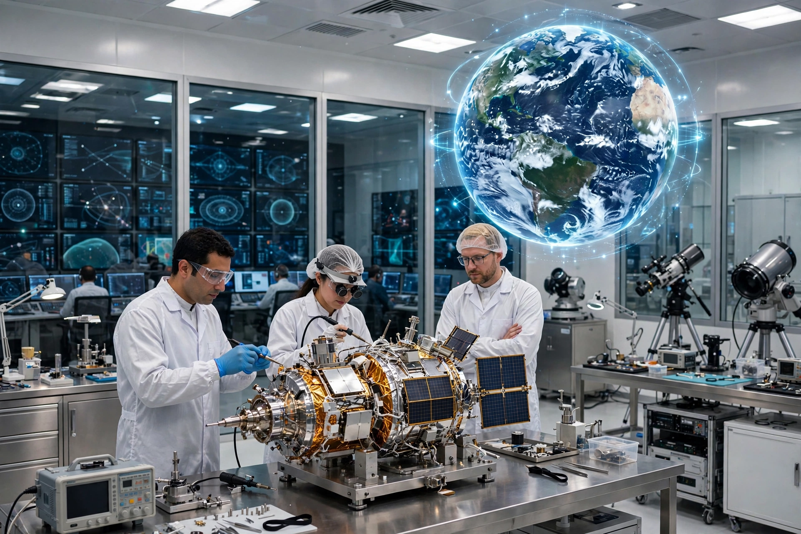
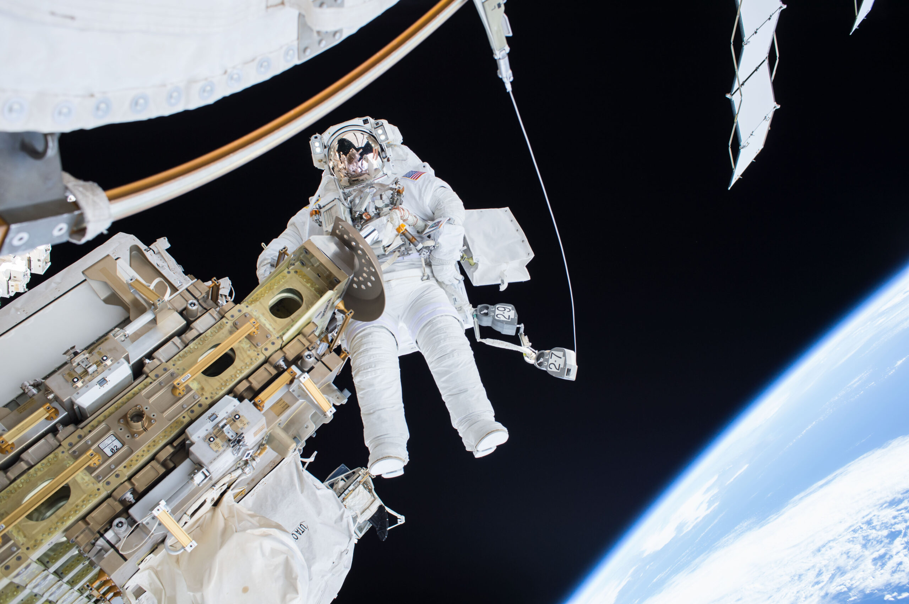

RESEARCH AREA / 01
SPACE SCIENCE

Studying space environments, celestial phenomena and scientific questions beyond Earth's atmosphere.
Exploring space, Earth and emerging technologies through scientific research, observation and advanced space-based applications.
Explore Research
Research connects observations, scientific knowledge and technology to better understand our planet, atmosphere and the space environment.
Studying space environments, celestial phenomena and scientific questions beyond Earth's atmosphere.

Using satellite observations and imagery to study land, water, agriculture and environmental change.

Researching atmospheric and environmental systems to understand changes happening across our planet.

Developing technological knowledge and systems that support future space-based capabilities.
Every discovery begins with an observation, a question and the search for an answer.
Gather observations from Earth and space.
Study patterns, measurements and collected data.
Turn observations into scientific knowledge.
Develop insights for future applications.
Space science research explores the physical environment beyond Earth and develops a deeper understanding of the space around our planet.
 SCIENTIFIC OBSERVATION
SCIENTIFIC OBSERVATION
Space-based data and research can support practical applications across agriculture, water resources, environmental monitoring, mapping and disaster management.
Research turns curiosity into knowledge, and knowledge into possibilities.
Explore SUPARCO